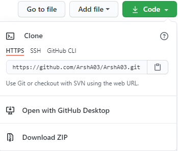

Installation
The only way to use this module is by cloning it from its github repository. If you have previous knowledge of cloning a repository you can skip this part.
Cloning Github Repo
Open the command line and head to the folder you want your project to be placed in:
>>> cd "Your project folder"
Then enter the following command:
(This would download all the files in the repository in your local project folder.)
>>> git clone https://github.com/ArshA03/Wave_Module.git
You can also directly download the repository from the GitHub by downloading the ZIP file as shown below:
|  |
|---|
| Downloading ZIP file from GitHub |
Importing the module
In order to be able to import the module successfully into your project, you have to put the Wave_Module.py file in the same directory as your project; otherwise, you should add the path in which the module exists by sys. To do so, add the following line at the top of your script.
sys.path.append(r'THE Full Path To Wave_Module.py')
Then import the whole Wave_Module by adding the line below:
from Wave_Module import *